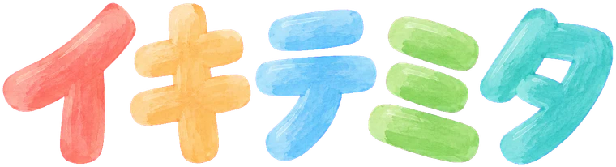

ボタンひとつで、だれかの一生をのぞく
イキテミタって？
「うまれる」を押すと、世界のどこかの ひと・どうぶつ・むし のどれかにうまれます。あとは、その一生を神さまの目線でながめるだけ。選ぶところはありません。
- スピードは ×1 から ×100 まで。とちゅうでも変えられます
- 1・4・9・25・100 の一生を、いっせいに走らせられます。100の窓のどれかを押すと、大きく見られます
- おわると「いのちの まとめ」の画像ができます。保存や、リンクでの共有ができます（同じリンクなら、同じ一生が見られます）
一生の つくりかた
一生は、ボタンを押したときに、あなたの端末の中で作られます（AI がその場で文章を書いているのではありません）。どれくらい生きるか・どんなできごとが起きるかは、本物の統計や資料をもとに、あらかじめ用意した確率で決まります。
- ひと: 年間の出生数が多い約60か国から、出生数の割合で国が決まります。寿命・乳児死亡率・都市に住む割合・出生率・インターネットの普及などは、国連の世界人口推計（2024年版）・国連の子どもの死亡推計（UN IGME）・世界銀行・ITU・UNESCO などの数字を丸めて使っています
- どうぶつ・むし: それぞれの寿命や、子どものうちに生き残る割合、たまごの数などを、論文や図鑑・研究機関の資料をもとに目安として入れています。たまごや子どものうちに大半がいなくなる生きものは、その厳しさもそのままです
- ほんとうの数: 地球にいる数の目安の割合で選ぶので、ほとんど虫になります
数字はどれも「目安」です。ひとりひとりの本当の一生を言い当てるものではありません。こわい表現はさけていますが、病気や事故で短く終わる一生も出てきます。
保存するもの
- スピードなどの設定と「これまでに いきてみた いのち」は、この端末のブラウザの中にだけ保存します。サーバーには送りません
- まとめの画像も、端末の中で作ります
- アクセスの数を知るために、Google アナリティクスを使っています（Cookie などで、どのページが見られたかを匿名で集計します）
絵と地図
- 絵は画像生成 AI で作り、作者が選んで使っています
- 地球儀の陸の形は Natural Earth（パブリックドメイン）をもとにしています
作った人・お問い合わせ
くぁくぁ（X @9qu1）が個人で作っています。まちがいや、気づいたことがあれば X で教えてください。